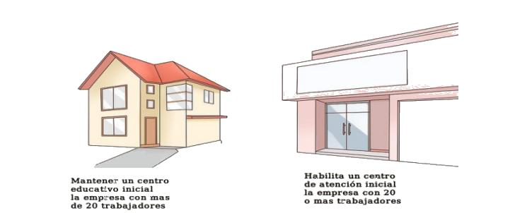

Tipos de Cargos¶
En ADempiere los tipos de cargos se encuentran conformados por diferentes cargos y su aplicación en documentos específicos generan ajustes de débito o crédito a los mismos.
Entendiendo como cargo, los diferentes conceptos por medio de los cuales se generan ajustes a un pago o a un cobro, dependiendo el caso que se presente. Significa entonces que los tipos de cargos son la agrupación o clasificación de los cargos, dependiendo de su implicación.
El presente material es elaborado por la empresa ERPyA, el mismo explicará de forma eficiente al usuario la utilidad que representan los tipos de cargos y los diferentes cargos que los conforman, para nuestra localización Venezuela en la versión 3.92 de ADempiere.
Recursos Humanos¶
El tipo de cargo “Recursos Humanos” se refiere netamente al personal de la empresa, en este se agrupan todos los cargos que pueden o no acreditar a todo el personal de la misma.
Comportamiento en ADempiere¶
El tipo de cargo “Recursos Humanos” es utilizado en ADempiere para generar un ajuste a la empresa por parte de un socio de negocio, el mismo será visualizado en los tipos de documentos nombrados a continuación:
Pago de Cuentas por Pagar Reembolso
Pago de Cuentas por Pagar Gasto Directo
Pago de Cuentas por Pagar Viáticos
Cobro de Cuentas por Cobrar Reembolso
Cobro de Cuentas por Cobrar Gasto Directo
Cobro de Cuentas por Cobrar Viáticos
Inventario de Uso Interno Obsequio
Cargos que contempla¶
Actualmente ADempiere utiliza diecisiete (17) diferentes cargos en tipo de cargo “Recursos Humanos”, que en su aplicación beneficia o no al personal de la empresa. A continuación son definidos los diferentes cargos pertenecientes al tipo de cargo “Recursos Humanos”.
Adiestramiento de Personal
Definición
Es enseñar al personal de la empresa cómo elaborar uno o varios procesos determinados, el mismo esta inducido a personal ya existente en la empresa.
Se realiza un adiestramiento de personal existente en la empresa con la finalidad de refrescar conocimientos o aclarar dudas que estos puedan tener.
Imagen 1. Adiestramiento Personal Existente
Implicación en ADempiere
En cuentas por cobrar el cargo “Adiestramiento de Personal” es utilizado por un socio de negocio tipo empleado para generar un ajuste de crédito a la empresa con la finalidad de que la misma le reintegre el dinero.
En cuentas por cobrar el cargo “Adiestramiento de Personal” es utilizado por la empresa para generar un ajuste de débito al socio de negocio tipo cliente con la finalidad de que el mismo le pague el dinero que le debe.
En cuentas por pagar el cargo “Adiestramiento de Personal” es utilizado por la empresa para generar un ajuste de crédito a un socio de negocio tipo cliente con la finalidad de que el mismo le reintegre el dinero.
En cuentas por pagar el cargo “Adiestramiento de Personal” es utilizado por el socio de negocio tipo empleado para generar un ajuste de débito a la empresa con la finalidad de que la misma le pague el dinero que le debe.
Warning
Permite reflejar el gasto referente a adiestramiento de personal, ya sea dentro o fuera de la empresa.
Alimentación (Extra-Tiempos) de Personal
Definición
Para obtener un mejor rendimiento de producción por parte del personal de la empresa, los mismos deben tener una buena alimentación de acuerdo a sus actividades dentro de la misma.
Es aconsejable que los trabajadores de la empresa mantengan una buena nutrición, cada cierto tiempo pueden realizar charlas sobre la misma en la empresa, de esta manera se puede comenzar a crear el habito de la buena alimentación en todos sus trabajadores. Algunos de los tips más recomendables para una buena alimentación son:
Imagen 2. Dieta Diaria para Trabajadores
Planifica un menú semanal distribuyendo los alimentos de manera equilibrada y variada a lo largo de la semana.
Realiza cinco comidas al día y establece los horarios de las mismas.
Hidrátate con uno o dos litros de agua al día.
Cocina sano y bajo en sal.
Los trabajadores de la empresa que cumplen tiempo extra deben continuar con sus horarios de comida normal, de esta manera se evitan las molestias estomacales. Se considera tiempo extra cuando el trabajador labora mas tiempo de lo previsto en el artículo 90 de la constitución de la República Bolivariana de Venezuela.
Al exceder el límite de horas establecidas en el artículo mencionado anteriormente, otorgará al trabajador el derecho de percibir el beneficio de alimentación, queda de su parte y en acuerdo con el empleador si desea recibir el alimento o que se le sume a las horas extras.
Implicación en ADempiere
En cuentas por cobrar el cargo “Alimentación (Extra-Tiempos) de Personal” es utilizado por un socio de negocio tipo empleado para generar un ajuste de crédito a la empresa con la finalidad de que la misma le reintegre el dinero.
En cuentas por cobrar el cargo “Alimentación (Extra-Tiempos) de Personal” es utilizado por la empresa para generar un ajuste de débito al socio de negocio tipo cliente con la finalidad de que el mismo le pague el dinero que le debe.
En cuentas por pagar el cargo “Alimentación (Extra-Tiempos) de Personal” es utilizado por la empresa para generar un ajuste de crédito a un socio de negocio tipo cliente con la finalidad de que el mismo le reintegre el dinero.
En cuentas por pagar el cargo “Alimentación (Extra-Tiempos) de Personal” es utilizado por el socio de negocio tipo empleado para generar un ajuste de débito a la empresa con la finalidad de que la misma le pague el dinero que le debe.
Warning
Permite reflejar el gasto referente a la alimentación del personal que trabaja extra tiempo con previa autorización de los supervisores correspondientes.
Capacitación de Personal
Definición
La capacitación de personal es realizado en nuevo ingreso para que el mismo adquiera conocimiento de los procesos que se realizan en la empresa y a su vez pueda desenvolverse cabalmente al momento de desempeñar el puesto en la misma. También es realizado por algúna rotación de puestos en la empresa por motivo de alguna vacante disponible.
Imagen 3. Capacitación de Personal Nuevo Ingreso
Implicación en ADempiere
En cuentas por cobrar el cargo “Capacitación de Personal” es utilizado por un socio de negocio tipo empleado para generar un ajuste de crédito a la empresa con la finalidad de que la misma le reintegre el dinero.
En cuentas por cobrar el cargo “Capacitación de Personal” es utilizado por la empresa para generar un ajuste de débito al socio de negocio tipo cliente con la finalidad de que el mismo le pague el dinero que le debe.
En cuentas por pagar el cargo “Capacitación de Personal” es utilizado por la empresa para generar un ajuste de crédito a un socio de negocio tipo cliente con la finalidad de que el mismo le reintegre el dinero.
En cuentas por pagar el cargo “Capacitación de Personal” es utilizado por el socio de negocio tipo empleado para generar un ajuste de débito a la empresa con la finalidad de que la misma le pague el dinero que le debe.
Warning
Permite reflejar el gasto referente a la capacitación de personal, ya sea dentro o fuera de la empresa.
Guardería/Matrícula de Dependiente de Personal
Definición
Se encuentra establecido en la ley del trabajador que la empresa con veinte (20) o menos trabajadores debe habilitar un centro de atención inicial, donde se incluya la sala de lactancia. Para el cuidado de los hijos de los trabajadores durante su horario de trabajado, el cual será dirigido por profesionales en educación inicial, que cuidaran de los niños con edad comprendida entre tres (3) meses y seis (6) años. Así mismo, la empresa con mas de (20) trabajadores, esta en la obligación de mantener un centro educativo inicial con sala de lactancia.

Imagen 4. Guardería Matrícula de Dependiente de Personal
Implicación en ADempiere
En cuentas por cobrar el cargo “Guardería/Matrícula de Dependiente de Personal” es utilizado por un socio de negocio tipo empleado para generar un ajuste de crédito a la empresa con la finalidad de que la misma le reintegre el dinero.
En cuentas por pagar el cargo “Guardería/Matrícula de Dependiente de Personal” es utilizado por el socio de negocio tipo proveedor para generar un ajuste de débito a la empresa con la finalidad de que la misma le pague el dinero que le debe.
Warning
Permite reflejar el gasto referente a la guardería o matrícula de los niños dependientes de los trabajadores de la empresa.
HCM de Personal
Definición
La gestión de capital humano que posee una empresa es la que se encarga de la contratación, productividad, seguridad, despido, entre otras tareas que competen netamente a los empleados de la misma. La finalidad de la existencia de un seguro HCM de personal en una empresa es indemnizar al asegurado por gastos medicos que adquiere como consecuencia de alteraciones de la salud de el mismo o sus familiares dependientes, de acuerdo a las condiciones establecidas en el documento.
Imagen 5. HCM de Personal
Implicación en ADempiere
En cuentas por cobrar el cargo “HCM de Personal” es utilizado por un socio de negocio tipo empleado para generar un ajuste de crédito a la empresa con la finalidad de que la misma le reintegre el dinero.
En cuentas por cobrar el cargo “HCM de Personal” es utilizado por la empresa para generar un ajuste de débito al socio de negocio tipo proveedor con la finalidad de que el mismo le pague el dinero que le debe.
En cuentas por pagar el cargo “HCM de Personal” es utilizado por la empresa para generar un ajuste de crédito a un socio de negocio tipo proveedor con la finalidad de que el mismo le reintegre el dinero.
En cuentas por pagar el cargo “HCM de Personal” es utilizado por el socio de negocio tipo empleado para generar un ajuste de débito a la empresa con la finalidad de que la misma le pague el dinero que le debe.
Warning
Permite reflejar el gasto referente a un caso de enfermedad o indemnización por gastos medicos.
Hospedaje de Personal
Definición
Es utilizado por las empresas que envian a sus empleados de viaje por asuntos de negocios, ya sea para realizar una compra o para realizar una venta, independientemente del motivo del viaje de trabajo que vaya a realizar el empleado, esta opción permite que de refleje el gasto generado a la empresa.
Imagen 6. Hospedaje de Personal
Implicación en ADempiere
En cuentas por cobrar el cargo “Hospedaje de Personal” es utilizado por un socio de negocio tipo empleado para generar un ajuste de crédito a la empresa con la finalidad de que la misma le reintegre el dinero.
En cuentas por cobrar el cargo “Hospedaje de Personal” es utilizado por la empresa para generar un ajuste de débito al socio de negocio tipo cliente con la finalidad de que el mismo le pague el dinero que le debe.
En cuentas por pagar el cargo “Hospedaje de Personal” es utilizado por la empresa para generar un ajuste de crédito a un socio de negocio tipo cliente con la finalidad de que el mismo el reintegre el dinero.
En cuentas por pagar el cargo “Hospedaje de Personal” es utilizado por el socio de negocio tipo empleado para generar un ajuste de débito a la empresa con la finalidad de que la misma le pague el dinero que le debe.
Warning
Permite reflejar el gasto referente a hospedaje en viajes por cuestiones de negocios.
Juguetes de Dependiente de Personal
Definición
Es utilizado por las empresas que le brindan a sus trabajadores el beneficio de juguetes para los niños dependientes de los mismos, para reflejar el gasto monetario por la compra de juguetes.
Imagen 7. Juguetes de Dependiente de Personal
Implicación en ADempiere
En cuentas por cobrar el cargo “Juguetes de Dependiente de Personal” es utilizado por un socio de negocio tipo empleado para generar un ajuste de crédito a la empresa con la finalidad de que la misma le reintegre el dinero.
En cuentas por pagar el cargo “Juguetes de Dependiente de Personal” es utilizado por el socio de negocio tipo empleado para generar un ajuste de débito a la empresa con la finalidad de que la misma le pague el dinero que le debe.
Warning
Permite reflejar el gasto referente a la compra de juguetes para los niños dependientes de los trabajadores de la empresa.
Obsequios de Personal
Definición
Los obsequios que las empresas le regalan a sus trabajadores son incentivos con la finalidad de que estos se motiven a seguir o como agradecimiento por los años de servicio que tenga el trabajador.
Imagen 8. Obsequios de Personal
Implicación en ADempiere
En cuentas por cobrar el cargo “Obsequios de Personal” es utilizado por un socio de negocio tipo empleado para generar un ajuste de crédito a la empresa con la finalidad de que la misma le reintegre el dinero.
En cuentas por pagar el cargo “Obsequios de Personal” es utilizado por el socio de negocio tipo empleado para generar un ajuste de débito a la empresa con la finalidad de que la misma le pague el dinero que le debe.
Warning
Permite reflejar el gasto referente a la compra de obsequios para los trabajadores de la empresa.
Pack de Alimentos de Personal
Definición
Se refiere a una cantidad de alimentos que la empresa le gestiona a sus trabajadores cada cierto tiempo, con la finalidad de beneficiar y motivar a cada uno de ellos.
Imagen 9. Pack de Alimentos de Personal
Implicación en ADempiere
En cuentas por cobrar el cargo “Pack de Alimentos de Personal” es utilizado por un socio de negocio tipo empleado para generar un ajuste de crédito a la empresa con la finalidad de que la misma le reintegre el dinero.
En cuentas por cobrar el cargo “Pack de Alimentos de Personal” es utilizado por la empresa para generar un ajuste de débito al socio de negocio tipo empleado con la finalidad de que el mismo le pague el dinero que le debe.
En cuentas por pagar el cargo “Pack de Alimentos de Personal” es utilizado por la empresa para generar un ajuste de crédito a un socio de negocio tipo empleado con la finalidad de que el mismo le reintegre el dinero.
En cuentas por pagar el cargo “Pack de Alimentos de Personal” es utilizado por el socio de negocio tipo empleado para generar un ajuste de débito a la empresa con la finalidad de que la misma le pague el dinero que le debe.
Warning
Permite reflejar el gasto referente a la compra de alimentos para los trabajadores de la empresa.
Recreación de Personal
Definición
Se refiere a las actividades recreativas que la empresa organiza para sus trabajadores con la finalidad de contribuir a que los mismos se ejerciten físicamente e incentivar a un buen desarrollo social y emocional por medio de distracciones que generen alegrías en los trabajadores.
Imagen 10. Recreación de Personal
Implicación en ADempiere
En cuentas por cobrar el cargo “Recreación de Personal” es utilizado por un socio de negocio tipo empleado para generar un ajuste de crédito a la empresa con la finalidad de que la misma le reintegre el dinero.
En cuentas por cobrar el cargo “Recreación de Personal” es utilizado por la empresa para generar un ajuste de débito al socio de negocio tipo cliente con la finalidad de que el mismo le pague el dinero que le debe.
En cuentas por pagar el cargo “Recreación de Personal” es utilizado por la empresa para generar un ajuste de crédito a un socio de negocio tipo cliente con la finalidad de que el mismo le reintegre el dinero.
En cuentas por pagar el cargo “Recreación de Personal” es utilizado por el socio de negocio tipo empleado para generar un ajuste de débito a la empresa con la finalidad de que la misma le pague el dinero que le debe.
Warning
Permite reflejar el gasto referente a la elaboración de las actividades recreativas para los trabajadores de la empresa.
Servicio Funerario de Personal
Definición
Se refiere al beneficio de servicios funerarios adquirido por los trabajadores de una determinada empresa, el mismo puede ser propio o transferible a un familiar y el pago de este es descontado de la nómina para luego ser entregado por la empresa a la funeraria.
Imagen 11. Servicio Funerario de Personal
Implicación en ADempiere
En cuentas por cobrar el cargo “Servicio Funerario de Personal” es utilizado por un socio de negocio tipo empleado para generar un ajuste de crédito a la empresa con la finalidad de que la misma le reintegre el dinero.
En cuentas por cobrar el cargo “Servicio Funerario de Personal” es utilizado por la empresa para generar un ajuste de débito al socio de negocio tipo empleado con la finalidad de que el mismo le pague el dinero que le debe.
En cuentas por pagar el cargo “Servicio Funerario de Personal” es utilizado por la empresa para generar un ajuste de crédito a un socio de negocio tipo empleado con la finalidad de que el mismo le reintegre el dinero.
En cuentas por pagar el cargo “Servicio Funerario de Personal” es utilizado por el socio de negocio tipo empleado para generar un ajuste de débito a la empresa con la finalidad de que la misma le pague el dinero que le debe.
Warning
Permite reflejar el gasto referente a los servicios funerarios de los trabajadores de la empresa. Las condiciones de pago del servicio siempre son establecidas por la funeraria en su contrato y cumplidas por la empresa por medio de descuentos realizados en el pago de la nómina del trabajador.
Taxi (Extra-Tiempos) de Personal
Definición
Se refiere a los gastos por concepto de pago de taxi realizados por los trabajadores de una determinada empresa cuando los mismos continuan trabajando luego de haber terminado su jornada laboral normal, indiferentemente el motivo de este, mientras que el trabajo extra tiempo se encuentre avalado por su supervisor.
Imagen 12. Taxi Extra Tiempos de Personal
Implicación en ADempiere
En cuentas por cobrar el cargo “Taxi (Extra-Tiempo) de Personal” es utilizado por un socio de negocio tipo empleado para generar un ajuste de crédito a la empresa con la finalidad de que la misma le reintegre el dinero.
En cuentas por cobrar el cargo “Taxi (Extra-Tiempo) de Personal” es utilizado por la empresa para generar un ajuste de débito al socio de negocio tipo cliente con la finalidad de que el mismo le pague el dinero que le debe.
En cuentas por pagar el cargo “Taxi (Extra-Tiempo) de Personal” es utilizado por la empresa para generar un ajuste de crédito a un socio de negocio tipo cliente con la finalidad de que el mismo le reintegre el dinero.
En cuentas por pagar el cargo “Taxi (Extra-Tiempo) de Personal” es utilizado por el socio de negocio tipo empleado para generar un ajuste de débito a la empresa con la finalidad de que la misma le pague el dinero que le debe.
Warning
Permite reflejar el gasto referente a taxis pagados por los trabajadores cuando cumplen trabajos extra tiempo avalado por su supervisor.
Transporte de Personal
Definición
Se refiere al traslado de los trabajadores de una determinada empresa, el mismo consta de buscar los trabajadores en un determinado lugar y llevarlos hasta la empresa o viceversa. El proposito de un transporte de personal es garatizar la puntualidad y seguridad de los mismos durante el traslado de un lugar a otro.
Imagen 13. Transporte de Personal
Implicación en ADempiere
En cuentas por cobrar el cargo “Transporte de Personal” es utilizado por un socio de negocio empleado o proveedor para generar un ajuste de crédito a la empresa con la finalidad de que la misma le reintegre el dinero.
En cuentas por cobrar el cargo “Transporte de Personal” es utilizado por la empresa para generar un ajuste de débito al socio de negocio tipo cliente con la finalidad de que el mismo le pague el dinero que le debe.
En cuentas por pagar el cargo “Transporte de Personal” es utilizado por la empresa para generar un ajuste de crédito a un socio de negocio tipo cliente con la finalidad de que el mismo le reintegre el dinero.
En cuentas por pagar el cargo “Transporte de Personal” es utilizado por el socio de negocio tipo empleado o proveedor para generar un ajuste de débito a la empresa con la finalidad de que la misma le pague el dinero que le debe.
Warning
Permite reflejar el gasto referente a transporte asignado o contratado para los trabajadores de la empresa.
Uniforme de Personal
Definición
Se refiere a la dotación de uniformes que la empresa le suministra a sus trabajadores, la misma es realizada cada cierto tiempo y dependiendo de condiciones como personal nuevo, existencia de uniformes, entre otras que impliquen que se puede realizar.
Imagen 14. Uniforme de Personal
Implicación en ADempiere
En cuentas por cobrar el cargo “Uniforme de Personal” es utilizado por un socio de negocio tipo proveedor o empleado para generar un ajuste de crédito a la empresa con la finalidad de que la misma le reintegre el dinero.
En cuentas por cobrar el cargo “Uniforme de Personal” es utilizado por la empresa para generar un ajuste de débito al socio de negocio tipo proveedor o empleado con la finalidad de que el mismo le pague el dinero que le debe.
En cuentas por pagar el cargo “Uniforme de Personal” es utilizado por la empresa para generar un ajuste de crédito a un socio de negocio tipo proveedor o empleado con la finalidad de que el mismo le reintegre el dinero.
En cuentas por pagar el cargo “Uniforme de Personal” es utilizado por el socio de negocio tipo proveedor o empleado para generar un ajuste de débito a la empresa con la finalidad de que la misma le pague el dinero que le debe.
Warning
Permite reflejar el gasto referente a los uniformes de los trabajadores de la empresa.,
Útiles Escolares de Dependiente de Personal
Definición
Es utilizado por las empresas que le brindan a sus trabajadores el beneficio de útiles escolares para los niños dependientes de los mismos, para reflejar el gasto monetario por la compra de útiles escolares.
Imagen 15. Útiles Escolares de Dependientes de Personal
Implicación en ADempiere
En cuentas por cobrar el cargo “Útiles Escolares de Dependiente de Personal” es utilizado por un socio de negocio tipo empleado para generar un ajuste de crédito a la empresa con la finalidad de que la misma le reintegre el dinero.
En cuentas por cobrar el cargo “Útiles Escolares de Dependiente de Personal” es utilizado por la empresa para generar un ajuste de débito al socio de negocio tipo proveedor con la finalidad de que el mismo le pague el dinero que le debe.
En cuentas por pagar el cargo “Útiles Escolares de Dependiente de Personal” es utilizado por la empresa para generar un ajuste de crédito a un socio de negocio tipo proveedor con la finalidad de que el mismo le reintegre el dinero.
En cuentas por pagar el cargo “Útiles Escolares de Dependiente de Personal” es utilizado por el socio de negocio tipo empleado para generar un ajuste de débito a la empresa con la finalidad de que la misma le pague el dinero que le debe.
Warning
Permite reflejar el gasto referente a los útiles escolares de los niños dependientes de los trabajadores de la empresa.
Viáticos de Personal
Definición
Se refiere a una cantidad de dinero que la empresa le suministra a los trabajadores que viajan por cuestiones de trabajo, es utilizado por la misma para reflejar el gasto monetario correspondiente a cada trabajador.
Imagen 16. Viáticos de Personal
Implicación en ADempiere
En cuentas por cobrar el cargo “Viáticos de Personal” es utilizado por un socio de negocio tipo empleado para generar un ajuste de crédito a la empresa con la finalidad de que la misma le reintegre el dinero.
En cuentas por cobrar el cargo “Viáticos de Personal” es utilizado por la empresa para generar un ajuste de débito al socio de negocio tipo cliente con la finalidad de que el mismo le pague el dinero que le debe.
En cuentas por pagar el cargo “Viáticos de Personal” es utilizado por la empresa para generar un ajuste de crédito a un socio de negocio tipo cliente o empleado con la finalidad de que el mismo le reintegre el dinero.
En cuentas por pagar el cargo “Viáticos de Personal” es utilizado por el socio de negocio tipo empleado para generar un ajuste de débito a la empresa con la finalidad de que el mismo le pague el dinero que le debe.
Warning
Permite reflejar el gasto referente a los viáticos de los trabajadores de la empresa.
Servicios Básicos¶
El tipo de cargo “Servicios Básicos” se refiere a todos aquellos servicios que son pagados por las empresas, en este se agrupan todos los cargos que acreditan a las empresas por posesión de los mismos, sin embargo las desacreditan monetariamente por el pago correspondiente a cada servicio.
Comportamiento en ADempiere¶
El tipo de cargo “Servicios Básicos” es utilizado en ADempiere para generar un ajuste de débito a la empresa por parte de un socio de negocio tipo proveedor o viceversa, el mismo será visualizado en los tipos de documentos nombrados a continuación:
Factura de Cuentas por Pagar Nacional
Factura de Cuentas por Pagar Importación
Factura de Cuentas por Pagar Intercompañía
Factura de Cuentas por Pagar Empleado
Factura de Cuentas por Pagar Indirecta
Factura de Cuentas por Cobrar Nacional
Factura de Cuentas por Cobrar Exportación
Factura de Cuentas por Cobrar Intercompañía
Factura de Cuentas por Cobrar Empleado
Factura de Cuentas por Cobrar Manual
Factura de Cuentas por Cobrar Pro forma
Factura de Cuentas por Cobrar Indirecta
Nota de Crédito de Cuentas por Cobrar Nacional
Nota de Crédito de Cuentas por Cobrar Exportación
Nota de Crédito de Cuentas por Cobrar Intercompañía
Nota de Crédito de Cuentas por Cobrar Empleado
Nota de Crédito de Cuentas por Cobrar Indirecta
Nota de Crédito de Cuentas por Pagar Nacional
Nota de Crédito de Cuentas por Pagar Importación
Nota de Crédito de Cuentas por Pagar Intercompañía
Nota de Crédito de Cuentas por Pagar Empleado
Nota de Crédito de Cuentas por Pagar Indirecta
Nota de Débito de Cuentas por Pagar Nacional
Nota de Débito de Cuentas por Pagar Importación
Nota de Débito de Cuentas por Pagar Intercompañía
Nota de Débito de Cuentas por Pagar Empleado
Nota de Débito de Cuentas por Pagar Indirecta
Nota de Débito de Cuentas por Cobrar Nacional
Nota de Débito de Cuentas por Cobrar Exportación
Nota de Débito de Cuentas por Cobrar Intercompañía
Nota de Débito de Cuentas por Cobrar Empleado
Nota de Débito de Cuentas por Cobrar Indirecta
Ajuste de Crédito de Cuentas por Pagar
Ajuste de Débito de Cuentas por Pagar
Ajuste de Crédito de Cuentas por Cobrar
Ajuste de Débito de Cuentas por Cobrar
Cargos que contempla¶
Actualmente ADempiere utiliza nueve (9) diferentes cargos en el tipo de cargo “Servicios Básicos”, que en su aplicación desacredita a la empresa monetariamente. A continuación son definidos los diferentes cargos pertenecientes al tipo de cargo “Servicios Básicos”.
Servicio de Agua
Definición:
Es el suministro de agua en las tuberías de las empresas utilizada para la produccción de sus productos, asi como también para las necesidades de sus trabajadores.
Imagen 17. Servicio de Agua
Implicación en ADempiere
En cuentas por pagar el cargo “Servicio de Agua” es utilizado por la empresa para generar un ajuste de débito al socio de negocio tipo cliente con la finalidad de pagarle al mismo el dinero que le debe.
Warning
Permite reflejar el gasto referente al servicio de agua suministrado en una empresa determinada.
Servicio de Agua Potable
Definición
Es el suministro de agua potable embotellada para el consumo de los trabajadores de una determinada empresa, la misma es surtida semanal, quincenal o mensual de acuerdo a su consumo.
Imagen 18. Servicio de Agua Potable
Implicación en ADempiere
En cuentas por pagar el cargo “Servicio de Agua Potable” es utilizado por la empresa para generar un ajuste de débito al socio de negocio tipo proveedor con la finalidad de pagarle al mismo el dinero que le debe.
Warning
Permite reflejar el gasto referente al servicio de agua potable suministrado en una empresa determinda.
Servicio de Aseo Urbano
Definición
Es el servicio de recolección de basura generada por la empresa en general, la misma es ubicada en un lugar especifico de la empresa para facilitar su canalización a los botaderos o lugares correspondientes.
Imagen 19. Servicio de Aseo Urbano
Implicación en ADempiere
En cuentas por pagar el cargo “Servicio de Aseo Urbano” es utilizado por la empresa para generar un ajuste de débito al socio de negocio tipo proveedor con la finalidad de pagarle al mismo el dinero que le debe.
Warning
Permite reflejar el gasto referente al servicio de aseo urbano correspondiente a una empresa determinada.
Servicio de Internet
Definición
Es el suministro de internet en los diferentes departamentos u oficinas de una determinada empresa, el mismo es adquirido mediante un contrato de servicio.
Imagen 20. Servicio de Internet
Implicación en ADempiere
En cuentas por pagar el cargo “Servicio de Internet” es utilizado por la empresa para generar un ajuste de débito al socio de negocio tipo proveedor con la finalidad de pagarle al mismo el dinero que le debe.
Warning
Permite reflejar el gasto referente al servicio de internet suministrado en un empresa determinada.
Servicio de Limpieza y Mantenimiento
Definición
Es el servicio adquirido por una empresa determinada para la limpieza de sus diferentes departamentos u oficinas, así como también para la limpieza y mantenimiento de sus equipos y maquinarias.
Imagen 21. Servicio de Limpieza y Mantenimiento
Implicación en ADempiere
En cuentas por pagar el cargo “Servicio de Limpieza y Mantenimiento” es utilizado por la empresa para generar un ajuste de débito al socio de negocio tipo proveedor con la finalidad de pagarle al mismo el dinero que le debe.
Warning
Permite reflejar el gasto referente al servicio de limpieza y mantenimiento suministrado en una determinada empresa.
Servicio de Luz
Definición
Es el suministro de energía eléctrica adquirida en una empresa determinada, la misma es necesaria para cumplir con sus propositos o metas de producción.
Imagen 22. Servicio de Luz
Implicación en ADempiere
En cuentas por pagar el cargo “Servicio de Luz” es utilizado por la empresa para generar un ajuste de débito al socio de negocio tipo proveedor con la finalidad de pagarle al mismo el dinero que le debe.
Warning
Permite reflejar el gasto referente al servicio de luz suministrado en una empresa determinada.
Servicio de Telefonía
Definición
Es el suministro de telefonía en los diferentes departamentos u oficinas de una determinada empresa, el mismo es adquirido mediante un contrato de servicio.
Imagen 23. Servicio de Telefonía
Implicación en ADempiere
En cuentas por pagar el cargo “Servicio de Telefonía” es utilizado por la empresa para generar un ajuste de débito al socio de negocio tipo proveedor con la finalidad de pagarle al mismo el dinero que le debe.
Warning
Permite reflejar el gasto referente al servicio de telefonía suministrado en una determinada empresa.
Servicio de Televisora
Definición
Es el suministro de televisión por cable y satelital en los diferentes departamentos u oficinas de una determinada empresa, el mismo es adquirido mediante un contrato de servicio.
Imagen 24. Servicio de Televisora
Implicación en ADempiere
En cuentas por pagar el cargo “Servicio de Televisora” es utilizado por la empresa para generar un ajuste de débito al socio de negocio tipo proveedor con la finalidad de pagarle al mismo el dinero que le debe.
Warning
Permite reflejar el gasto referente al servicio de televisora suministrado en una determinada empresa.
Servicio de Vigilancia
Definición
Es el servicio adquirido por una empresa determinada con la finalidad de tener una buena supervisión y seguridad en las diferentes áreas que conforman la misma.
Imagen 25. Servicio de Vigilancia
Implicación en ADempiere
En cuentas por pagar el cargo “Servicio de Vigilancia” es utilizado por la empresa para generar un ajuste de débito al socio de negocio tipo tipo proveedor con la finalidad de pagarle al mismo el dinero que le debe.
Warning
Permite reflejar el gasto referente al servicio de vigilancia suministrado en una empresa determinada.
Nómina¶
El tipo de cargo “Nómina” se refiere a todos aquellos pagos realizados por las empresas en beneficio de sus empleados, en este se agrupan todos los cargos que acreditan a los trabajadores de las mismas.
Comportamiento en ADempiere¶
El tipo de cargo “Nómina” es utilizado en ADempiere para generar un ajuste de débito a la empresa por parte de un socio de negocio tipo empleado o viceversa, el ajuste será visualizado en los tipos de documentos nombrados a continuación:
Nómina Mensual
Nómina por Comisiones
Nómina por Pagos Especiales
Nómina Prestaciones Sociales
Nómina Quincenal
Nómina Retroactivo
Nómina Semanal
Nómina Utilidades
Nómina Vacaciones
Ajuste de Crédito de Cuentas por Pagar
Ajuste de Débito de Cuentas por Pagar
Ajuste de Débito de Cuentas por Cobrar
Nómina Bono de Alimentación
Cargos que contempla¶
Actualmente ADempiere utiliza catorce (14) diferentes cargos en el tipo de cargo “Nómina” que en su aplicación beneficia a los trabajadores de la empresa. A continuación son definidos los diferentes cargos pertenecientes al tipo de cargo “Nómina”.
Antigüedad por Pagar
Definición
Se refiere al pago que las empresas le realizan a sus trabajadores como beneficio por años de prestación de servicio ininterrumpidos cumplidos en la mismas.
Imagen 26. Antigüedad por Pagar
Implicación en ADempiere
En cuentas por pagar el cargo “Antigüedad por Pagar” es utilizado por la empresa para generar un ajuste de débito con la finalidad de que la misma le pague el dinero que le debe al socio del negocio tipo empleado.
Warning
Permite reflejar los pagos referentes a la antigüedad que tienen los diferentes trabajadores de las empresas.
Aporte INCES
Definición
Se refiere al pago trimestral que las empresas le realizan al Instituto Nacional de Capacitación y Educación Socialista (INCES) al tener cinco (5) o más trabajadores cumpliendo actividades para las mismas.
Imagen 27. Aporte INCES
Implicación en ADempiere
En cuentas por pagar el cargo “Aporte INCES” es utilizado por la empresa para generar un ajuste de débito con la finalidad de que la misma le pague el dinero que le debe al socio del negocio.
Warning
Permite reflejar el pago referente al aporte INCES que la empresa realiza trimestralmente.
Aporte RPE
Definición
Se refiere al pago que las empresas hacen al Instituto Venezolano de los Seguros Sociales (IVSS) por cada empleado que tienen cumpliendo actividades para las mismas.
Imagen 28. Aporte RPE
Implicación en ADempiere
En cuentas por pagar el cargo “Aporte RPE” es utilizado por la empresa para generar un ajuste de débito con la finalidad de que la misma le pague el dinero que le debe al socio del negocio.
Warning
Permite reflejar el pago referente al aporte RPE que la empresa realiza correspondiente a cada trabajador.
Aporte RPVH
Definición
Se refiere al pago que las empresas hacen al Fondo de Ahorro Obligatorio y Voluntario para la Vivienda (FAOV) por cada empleado que tienen cumpliendo actividades para las mismas.
Imagen 29. Aporte RPVH
Implicación en ADempiere
En cuentas por pagar el cargo “Aporte RPVH” es utilizado por la empresa para generar un ajuste de débito con la finalidad de que la misma le pague el dinero que le debe al socio del negocio.
Warning
Permite reflejar el pago referente al aporte RPVH que la empresa realiza correspondiente a cada trabajador.
Aporte SSO
Definición
Se refiere al pago que las empresas hacen al Instituto Venezolano de los Seguros Sociales (IVSS) por cada empleado que tienen cumpliendo actividades para las mismas.
Imagen 30. Aporte SSO
Implicación en ADempiere
En cuentas por pagar el cargo “Aporte SSO” es utilizado por la empresa para generar un ajuste de débito con la finalidad de que la misma le pague el dinero que le debe al socio del negocio.
Warning
Permite reflejar el pago referente al aporte SSO que la empresa realiza correspondiente a cada trabajador.
Bono Alimentación
Definición
Se refiere al pago que las empresas le realizan a sus trabajadores como beneficio de una alimentación balanceada para obtener mayor productividad por causa del buen estado nutricional de los mismos.
Imagen 31. Bono Alimentación
Implicación en ADempiere
En cuentas por pagar el cargo “Bono de Alimentación” es utilizado por la empresa para generar un ajuste de débito con la finalidad de que la misma le pague el dinero que le debe al socio del negocio tipo empleado.
Warning
Permite reflejar los pagos referentes al bono de alimentación de los diferentes trabajadores de las empresas.
Retención INCES
Definición
Se refiere al porcentaje de retención que la empresa le aplica a cada uno de sus trabajadores, destinado al aporte INCES.
Imagen 32. Retención INCES
Implicación en ADempiere
En cuentas por cobrar el cargo “Retención INCES” es utilizado por la empresa para generar un ajuste de débito al socio de negocio tipo empleado con la finalidad de que el mismo le pague el dinero que le debe.
Warning
Permite reflejar la retención referente a INCES que la empresa aplica a cada trabajador de la misma.
Retención ISLR
Definición
Se refiere al porcentaje de retención que la empresa le aplica a cada uno de sus socios de negocios tipo proveedores, así como también, el porcentaje de retención que cada uno de los socios de negocios tipo clientes le aplica a la empresa, el monto aplicado en ambas partes es destinado al ente “SENIAT”.
Imagen 33. Retención ISLR
Implicación en ADempiere
En cuentas por cobrar el cargo “Retención ISLR” es utilizado por la empresa para generar un ajuste de débito al socio de negocio tipo proveedor con la finalidad de retener un porcentaje de dinero.
En cuentas por pagar el cargo “Retención ISLR” es utilizado por el socio de negocio tipo cliente para generar un ajuste de débito a la empresa con la finalidad de retener un porcentaje de dinero.
Warning
Permite reflejar la retención referente al ISLR aplicada como cliente o por el cliente.
Retención RPE
Definición
Se refiere al porcentaje de retención que la empresa le aplica a cada uno de sus trabajadores, destinado al aporte RPE.
Imagen 34. Retención RPE
Implicación en ADempiere
En cuentas por cobrar el cargo “Retención RPE” es utilizado por la empresa para generar un ajuste de débito al socio de negocio tipo empleado con la finalidad de retener un porcentaje de dinero.
Warning
Permite reflejar la retención referente a RPE que la empresa aplica a cada trabajador de la misma.
Retención RPVH
Definición
Se refiere al porcentaje de retención que la empresa le aplica a cada uno de sus trabajadores, destinado al aporte RPVH.
Imagen 35. Retención RPVH
Implicación en ADempiere
En cuentas por cobrar el cargo “Retención RPVH” es utilizado por la empresa para generar un ajuste de débito al socio de negocio tipo empleado con la finalidad de retener un porcentaje de dinero.
Warning
Permite reflejar la retención referente a RPVH que la empresa aplica a cada trabajador de la misma.
Retención SSO
Definición
Se refiere al porcentaje de retención que la empresa le aplica a cada uno de sus trabajadores, destinado al aporte SSO.
Imagen 36. Retención SSO
Implicación en ADempiere
En cuentas por cobrar el cargo “Retención SSO” es utilizado por la empresa para generar un ajuste de débito al socio de negocio tipo empleado con la finalidad de retener un porcentaje de dinero.
Warning
Permite reflejar la retención referente a SSO que la empresa aplica a cada trabajador de la misma.
Sueldos y Salarios por Pagar
Definición
Se refiere al pago que la empresa realiza a cada uno de los trabajadores por las actividades que cumplen para la misma durante su jornada laboral.
Imagen 37. Sueldos y Salarios por Pagar
Implicación en ADempiere
En cuentas por pagar el cargo “Sueldos y Salarios por Pagar” es utilizado por la empresa para generar un ajuste de débito con la finalidad de que la misma le pague el dinero que le debe al socio del negocio tipo empleado.
Warning
Permite reflejar los pagos referentes a los sueldos y salarios de los diferentes trabajadores de las empresas.
Utilidades por Pagar
Definición
Es utilizado en una empresa determinada para reflejar el pago realizado a cada uno de sus trabajadores por las vacaciones que le corresponden según lo establecido en el artículo 131 de la LOTTT.
Imagen 38. Utilidades por Pagar
Implicación en ADempiere
En cuentas por pagar el cargo “Utilidades por Pagar” es utilizado por la empresa para generar un ajuste de débito con la finalidad de que la misma le pague el dinero que le debe al socio del negocio tipo empleado.
Warning
Permite reflejar los pagos referentes a las utilidades de los diferentes trabajadores de las empresas.
Vacaciones por Pagar
Definición
Es utilizado en una empresa determinada para reflejar el pago realizado a cada uno de sus trabajadores por las vacaciones que le corresponden según lo establecido en el artículo 190 de la LOTTT.
Imagen 39. Vacaciones por Pagar
Implicación en ADempiere
En cuentas por pagar el cargo “Vacaciones por Pagar” es utilizado por la empresa para generar un ajuste de débito con la finalidad de que la misma le pague el dinero que le debe al socio del negocio tipo empleado.
Warning
Permite reflejar los pagos referentes a las vacaciones de los diferentes trabajadores de las empresas.
Publicidad¶
El tipo de cargo “Publicidad” se refiere a toda aquella publicidad que es pagada por las empresas, en este tipo de cargo se agrupan todos los cargos que acreditan a las empresas por publicidad y propaganda, sin embargo las desacreditan monetariamente por el pago correspondiente a cada publicidad.
Comportamiento en ADempiere¶
El tipo de cargo “Publicidad” es utilizado en ADempiere para generar un ajuste de débito a la empresa por parte de un socio de negocio tipo proveedor o viceversa, el ajuste será visualizado en los tipos de documentos nombrados a continuación:
Factura de Cuentas por Pagar Nacional
Factura de Cuentas por Pagar Importación
Factura de Cuentas por Pagar Intercompañía
Factura de Cuentas por Pagar Empleado
Factura de Cuentas por Pagar Indirecta
Factura de Cuentas por Cobrar Nacional
Factura de Cuentas por Cobrar Exportación
Factura de Cuentas por Cobrar Intercompañía
Factura de Cuentas por Cobrar Empleado
Factura de Cuentas por Cobrar Indirecta
Factura de Cuentas por Cobrar Pro forma
Factura de Cuentas por Cobrar Manual
Nota de Crédito de Cuentas por Cobrar Nacional
Nota de Crédito de Cuentas por Cobrar Exportación
Nota de Crédito de Cuentas por Cobrar Intercompañía
Nota de Crédito de Cuentas por Cobrar Empleado
Nota de Crédito de Cuentas por Cobrar Indirecta
Nota de Crédito de Cuentas por Pagar Nacional
Nota de Crédito de Cuentas por Pagar Importación
Nota de Crédito de Cuentas por Pagar Intercompañía
Nota de Crédito de Cuentas por Pagar Empleado
Nota de Crédito de Cuentas por Pagar Indirecta
Nota de Débito de Cuentas por Cobrar Nacional
Nota de Débito de Cuentas por Cobrar Exportación
Nota de Débito de Cuentas por Cobrar Intercompañía
Nota de Débito de Cuentas por Cobrar Empleado
Nota de Débito de Cuentas por Cobrar Indirecta
Nota de Débito de Cuentas por Pagar Nacional
Nota de Débito de Cuentas por Pagar Importación
Nota de Débito de Cuentas por Pagar Intercompañía
Nota de Débito de Cuentas por Pagar Empleado
Nota de Débito de Cuentas por Pagar Indirecta
Ajuste de Crédito de Cuentas por Pagar
Ajuste de Débito de Cuentas por Pagar
Ajuste de Crédito de Cuentas por Cobrar
Ajuste de Débito de Cuentas por Cobrar
Cargos que contempla¶
Actualmente ADempiere utiliza cinco (5) diferentes cargos en el tipo de cargo “Publicidad” que en su aplicación desacredita a la empresa monetariamente. A continuación son definidos los diferentes cargos pertenecientes al tipo de cargo “Publicidad”.
Marketing Redes Sociales
Definición
Se refiere a la propaganda o publicidad que reciben las empresas por medio de las diferentes redes sociales, con la finalidad de llegar a los clientes o futuros clientes de las mismas.
Imagen 40. Marketing Redes Sociales
Implicación en ADempiere
En cuentas por pagar el cargo “Marketing Redes Sociales” es utilizado por la empresa para generar un ajuste de débito al socio de negocio tipo tipo proveedor con la finalidad de pagarle al mismo el dinero que le debe.
Warning
Permite reflejar el gasto referente a la publicidad de marketing en redes sociales, de una empresa determinada.
Publicidad en Revista/Periódico
Definición
Se refiere a la propaganda o publicidad que reciben las empresas por medio de las diferentes revistas o periódicos, con la finalidad de llegar a los clientes o futuros clientes de las mismas.
Imagen 41. Publicidad en Revista/Periódico
Implicación en ADempiere
En cuentas por pagar el cargo “Publicidad en Revista/Periódico” es utilizado por la empresa para generar un ajuste de débito al socio de negocio tipo tipo proveedor con la finalidad de pagarle al mismo el dinero que le debe.
Warning
Permite reflejar el gasto referente a la publicidad en revistas y periódicos de una empresa determinada.
Publicidad Radio
Definición
Se refiere a la propaganda o publicidad que reciben las empresas por medio de las diferentes emisoras de radio, con la finalidad de llegar a los clientes o futuros clientes de las mismas.
Imagen 42. Publicidad Radio
Implicación en ADempiere
En cuentas por pagar el cargo “Publicidad Radio” es utilizado por la empresa para generar un ajuste de débito al socio de negocio tipo tipo proveedor con la finalidad de pagarle al mismo el dinero que le debe.
Warning
Permite reflejar el gasto referente a la publicidad en radio de una empresa determinada.
Publicidad Televisión
Definición
Se refiere a la propaganda o publicidad que reciben las empresas por medio de los diferentes canales de televisión, con la finalidad de llegar a los clientes o futuros clientes de las mismas.
Imagen 43. Publicidad Televisión
Implicación en ADempiere
En cuentas por pagar el cargo “Publicidad Televisión” es utilizado por la empresa para generar un ajuste de débito al socio de negocio tipo tipo proveedor con la finalidad de pagarle al mismo el dinero que le debe.
Warning
Permite reflejar el gasto referente a la publicidad en televisión de una empresa determinada.
Publicidad en Vallas
Definición
Se refiere a la propaganda o publicidad que reciben las empresas por medio de diferentes vallas publicitarias, con la finalidad de llegar a los clientes o futuros clientes de las mismas.
Imagen 44. Publicidad en Vallas
Implicación en ADempiere
En cuentas por pagar el cargo “Publicidad en Vallas” es utilizado por la empresa para generar un ajuste de débito al socio de negocio tipo tipo proveedor con la finalidad de pagarle al mismo el dinero que le debe.
Warning
Permite reflejar el gasto referente a la publicidad en vallas de una empresa determinada.
Administrativos¶
El tipo de cargo “Administrativos” se refiere a todos aquellos gastos pagados por las empresas para la adquisición de beneficios para la misma, en este se agrupan todos los cargos que acreditan a las empresas por beneficios o adquisiciones, sin embargo las desacreditan monetariamente por el pago correspondiente a cada beneficio o adquisición.
Comportamiento en ADempiere¶
El tipo de cargo “Administrativos” es utilizado en ADempiere para generar un ajuste de débito a la empresa por parte de un socio de negocio tipo proveedor o viceversa, el ajuste será visualizado en los tipos de documentos nombrados a continuación:
Factura de Cuentas por Pagar Nacional
Factura de Cuentas por Pagar Importación
Factura de Cuentas por Pagar Intercompañía
Factura de Cuentas por Pagar Empleado
Factura de Cuentas por Pagar Indirecta
Factura de Cuentas por Cobrar Nacional
Factura de Cuentas por Cobrar Exportación
Factura de Cuentas por Cobrar Intercompañía
Factura de Cuentas por Cobrar Empleado
Factura de Cuentas por Cobrar Manual
Factura de Cuentas por Cobrar Indirecta
Factura de Cuentas por Cobrar Pro forma
Nota de Crédito de Cuentas por Cobrar Nacional
Nota de Crédito de Cuentas por Cobrar Exportación
Nota de Crédito de Cuentas por Cobrar Intercompañía
Nota de Crédito de Cuentas por Cobrar Empleado
Nota de Crédito de Cuentas por Cobrar Indirecta
Nota de Crédito de Cuentas por Pagar Nacional
Nota de Crédito de Cuentas por Pagar Importación
Nota de Crédito de Cuentas por Pagar Intercompañía
Nota de Crédito de Cuentas por Pagar Empleado
Nota de Crédito de Cuentas por Pagar Indirecta
Nota de Débito de Cuentas por Cobrar Nacional
Nota de Débito de Cuentas por Cobrar Exportación
Nota de Débito de Cuentas por Cobrar Intercompañía
Nota de Débito de Cuentas por Cobrar Empleado
Nota de Débito de Cuentas por Cobrar Indirecta
Nota de Débito de Cuentas por Pagar Nacional
Nota de Débito de Cuentas por Pagar Importación
Nota de Débito de Cuentas por Pagar Intercompañía
Nota de Débito de Cuentas por Pagar Empleado
Nota de Débito de Cuentas por Pagar Indirecta
Ajuste de Crédito de Cuentas por Pagar
Ajuste de Débito de Cuentas por Pagar
Ajuste de Crédito de Cuentas por Cobrar
Ajuste de Débito de Cuentas por Cobrar
Orden de Venta Nacional
Orden de Venta Exportación
Orden de Venta Intercompañía
Orden de Venta Empleado
Orden de Venta Indirecta
Cargos que contempla¶
Actualmente ADempiere utiliza dieciocho (18) diferentes cargos en el tipo de cargo “Administrativos” que en su aplicación desacredita a la empresa monetariamente. A continuación son definidos los diferentes cargos pertenecientes al tipo de cargo “Adiministrativos”.
Artículos de Limpieza
Definición
Se refiere al gasto realizado por la compra de productos o artículos de limpieza utilizados en toda la empresa en general.
Imagen 45. Artículos de Limpieza
Implicación en ADempiere
En cuentas por pagar el cargo “Artículos de Limpieza” es utilizado por la empresa para generar un ajuste de débito al socio de negocio tipo proveedor con la finalidad de pagarle al mismo el dinero que le debe.
Warning
Permite reflejar el gasto referente a los artículos de limpieza utilizados en una determinada empresa.
Combustible y Lubricantes
Definición
Se refiere al gasto realizado por la compra de combustible y lubricantes para los diferentes carros de la empresa.
Imagen 46. Combustible y Lubricantes
Implicación en ADempiere
En cuentas por pagar el cargo “Combustible y Lubricantes” es utilizado por la empresa para generar un ajuste de débito al socio de negocio tipo proveedor con la finalidad de pagarle al mismo el dinero que le debe.
Warning
Permite reflejar el gasto referente a combustibles y lubricantes utilizados en los carros o camiones de una empresa determinada.
Donaciones
Definición
Se refiere a los diferentes gastos que las empresas realizan para todas aquellas donaciones que las mismas hacen.
Imagen 47. Donaciones
Implicación en ADempiere
En cuentas por pagar el cargo “Donaciones” es utilizado por la empresa para generar un ajuste de débito al socio de negocio con la finalidad de pagarle al mismo el dinero que le debe.
Warning
Permite reflejar el gasto referente a las donaciones realizadas por una empresa.
Encomienda
Definición
Imagen 48. Encomienda
Implicación en ADempiere
En cuentas por pagar el cargo “Encomienda” es utilizado por la empresa para generar un ajuste de débito al socio de negocio tipo proveedor con la finalidad de pagarle al mismo el dinero que le debe.
En cuentas por cobrar el cargo “Encomienda” es utilizado por la empresa para generar un ajuste de débito al socio de negocio tipo cliente con la finalidad de que el mismo le pague el dinero que le debe.
Warning
Permite reflejar el gasto referente a los envios o entregas a domicilio realizados por una determinada empresa.
Equipos Tecnológicos
Definición
Se refiere al gasto que las empresas realizan por la compra de los equipos tecnológicos necesarios en cada una de las áreas de las mismas.
Imagen 49. Equipos Tecnológicos
Implicación en ADempiere
En cuentas por pagar el cargo “Equipos Tecnológicos” es utilizado por la empresa para generar un ajuste de débito al socio de negocio tipo proveedor con la finalidad de pagarle al mismo el dinero que le debe.
Warning
Permite reflejar el gasto referente a los equipos tecnológicos utilizados en una determinada empresa.
Honorarios Profesionales
Definición
Se refiere al pago que las empresas realizan a los trabajadores por profesión, el mismo aplica para los socios de negocios tipo empleados así como para los socios de negocios que le presten algún servicio.
Imagen 50. Honorarios Profesionales
Implicación en ADempiere
En cuentas por pagar el cargo “Honorarios Profesionales” es utilizado por la empresa para generar un ajuste de débito al socio de negocio con la finalidad de pagarle al mismo el dinero que le debe.
Warning
Permite reflejar el gasto referente a los honorarios profesionales de los trabajadores en una determinada empresa.
Impuestos, Tasas y Contribuciones
Definición
Se refiere al gasto que tienen las diferentes empresas por el pago de impuestos, tasas y contribuciones determinadas.
Imagen 51. Impuestos, Tasas y Contribuciones
Implicación en ADempiere
En cuentas por pagar el cargo “Impuestos, Tasas y Contribuciones” es utilizado por la empresa para generar un ajuste de débito al socio de negocio con la finalidad de pagarle al mismo el dinero que le debe.
Warning
Permite reflejar el gasto referente a los impuestos, tasas y contribuciones de una determinada empresa.
Insumos de Oficina
Definición
Se refiere al gasto de las diferentes empresas por la compra de insumos de oficina para todos sus departamentos o áreas que los requieran.
Imagen 52. Insumos de Oficina
Implicación en ADempiere
En cuentas por pagar el cargo “Insumos de Oficina” es utilizado por la empresa para generar un ajuste de débito al socio de negocio tipo proveedor con la finalidad de pagarle al mismo el dinero que le debe.
Warning
Permite reflejar el gasto referente a los insumos de oficina utilizados en una determinada empresa.
Intereses Moratorios de Compra
Definición
Se refiere al gasto que realizan todas aquellas empresas que se tardan en pagar el monto de las compras realizadas, mismas que generan intereses en beneficio del acreedor.
Imagen 53. Intereses Moratorios de Compra
Implicación en ADempiere
En cuentas por pagar el cargo “Intereses Moratorios de Compra” es utilizado por la empresa para generar un ajuste de débito al socio de negocio tipo proveedor con la finalidad de pagarle al mismo el dinero que le debe.
Warning
Permite reflejar el gasto referente a los intereses moratorios de compra de una determinada empresa.
Matenimiento de Equipos
Definición
Se refiere al gasto que las empresas realizan por el pago del mantenimiento de los diferentes equipos que las mismas poseen en sus departamentos o áreas.
Imagen 54. Mantenimiento de Equipos
Implicación en ADempiere
En cuentas por pagar el cargo “Mantenimiento de Equipos” es utilizado por la empresa para generar un ajuste de débito al socio de negocio tipo proveedor con la finalidad de pagarle al mismo el dinero que le debe.
Warning
Permite reflejar el gasto referente al mantenimiento de los equipos utilizados en una determinada empresa.
Periódicos, Libros y Revistas
Definición
Se refiere al gasto que las empresas realizan por la compra de periódicos, libros y revistas para las mismas.
Imagen 55. Periódicos, Libros y Revistas
Implicación en ADempiere
En cuentas por pagar el cargo “Periódicos, Libros y Revistas” es utilizado por la empresa para generar un ajuste de débito al socio de negocio tipo proveedor con la finalidad de pagarle al mismo el dinero que le debe.
Warning
Permite reflejar el gasto referente a los periódicos, libros y revistas utilizados en una determinada empresa.
Póliza de Seguro
Definición
Se refiere al gasto que las empresas realizan mensualmente como pago de la adquisición de una póliza de seguro para resguardar la misma.
Imagen 56. Póliza de Seguro
Implicación en ADempiere
En cuentas por pagar el cargo “Póliza de Seguro” es utilizado por la empresa para generar un ajuste de débito al socio de negocio tipo proveedor con la finalidad de pagarle al mismo el dinero que le debe.
Warning
Permite reflejar el gasto referente a la póliza de seguro de una determinada empresa.
Reembolso de Caja Chica
Definición
Los gastos realizados por los diferentes trabajadores de las empresas cuando en ocasiones pagan de su dinero personal, son reintegrados a los mismos por medio de este cargo en la caja correspondiente de cada uno.
Imagen 57. Reembolso de Caja Chica
Implicación en ADempiere
En cuentas por cobrar el cargo “Reembolso de Caja Chica” es utilizado por un socio de negocio tipo empleado para generar un ajuste de crédito a la empresa con la finalidad de que la misma le reintegre el dinero.
En cuentas por cobrar el cargo “Reembolso de Caja Chica” es utilizado por la empresa para generar un ajuste de débito al socio de negocio tipo cliente con la finalidad de que el mismo le pague el dinero que le debe.
En cuentas por pagar el cargo “Reembolso de Caja Chica” es utilizado por la empresa para generar un ajuste de crédito a un socio de negocio tipo cliente con la finalidad de que el mismo le reintegre el dinero.
En cuentas por pagar el cargo “Reembolso de Caja Chica” es utilizado por el socio de negocio tipo empleado para generar un ajuste de débito a la empresa con la finalidad de que la misma le pague el dinero que le debe.
Warning
Permite reflejar el pago referente al reembolso de caja chica de cada trabajador.
Reparación de Edificación e Instalaciones
Definición
Se refiere al gasto realizado por la compra de materiales o por la mano de obra para las reparaciones o instalaciones en la edificación u empresa.
Imagen 58. Reparación de Edificación e Instalaciones
Implicación en ADempiere
En cuentas por pagar el cargo “Reparación de Edificación e Instalaciones” es utilizado por la empresa para generar un ajuste de débito al socio de negocio tipo proveedor con la finalidad de pagarle al mismo el dinero que le debe.
Warning
Permite reflejar el gasto realizado referente a la reparación e instalaciones en la empresa.
Reparación de Vehículos
Definición
Se refiere al gasto realizado por la reparación de los diferentes vehículos de las empresas u organizaciones.
Imagen 59. Reparación de Vehículos
Implicación en ADempiere
En cuentas por pagar el cargo “Reparación de Vehículos” es utilizado por la empresa para generar un ajuste de débito al socio de negocio con la finalidad de pagarle al mismo el dinero que le debe.
Warning
Permite reflejar el gasto referente a la reparación de los vehículos de la empresa.
Reproducción
Definición
Se refiere a todos aquellos gastos por impresiones, fotocopias, entre otros tipos de reproducciones que son realizados por las diferentes empresas siendo estos necesarios para las gestiones que las mismas realizan.
Imagen 60. Reproducción
Implicación en ADempiere
En cuentas por cobrar el cargo “Reproducción” es utilizado por la empresa para generar un ajuste de débito al socio de negocio con la finalidad de que el mismo le pague el dinero que le debe.
En cuentas por pagar el cargo “Reproducción” es utilizado por la empresa para generar un ajuste de débito al socio de negocio con la finalidad de pagarle al mismo el dinero que le debe.
Warning
Permite reflejar el gasto referente a las impresiones, fotocopias, entre otros tipos de reproducciones que realizan las empresas.
Servicios de Informática
Definición
Se refiere al gasto realizado por los servicios de informática implementados en los diferentes departamentos de las empresas.
Imagen 61. Servicios de Informática
Implicación en ADempiere
En cuentas por cobrar el cargo “Servicios de Informática” es utilizado por la empresa para generar un ajuste de débito al socio de negocio con la finalidad de que el mismo le pague el dinero que le debe.
En cuentas por pagar el cargo “Servicios de Informática” es utilizado por la empresa para generar un ajuste de débito al socio de negocio con la finalidad de pagarle al mismo el dinero que le debe.
Warning
Permite reflejar el gasto referente a los servicios de informática implementados en las empresas.
Servicios Legales
Definición
Se refiere al gasto realizado por los diferentes servicios legales suministrados en las empresas.
Imagen 62. Servicios Legales
Implicación en ADempiere
En cuentas por pagar el cargo “Servicios Legales” es utilizado por la empresa para generar un ajuste de débito al socio de negocio con la finalidad de pagarle al mismo el dinero que le debe.
Warning
Permite reflejar el gasto referente a los servicios legales suministrados en las empresas.
Bancario¶
El tipo de cargo “Bancario” se refiere a todos aquellos pagos que las empresas realiza por imposición u obligación, en este se agrupan todos los cargos que desacreditan monetariamente a las empresas por deudas obtenidas por obligación.
Comportamiento en ADempiere¶
El tipo de cargo “Bancario” es utilizado en ADempiere para generar un ajuste de débito a la empresa por parte de un socio de negocio o viceversa, el ajuste será visualizado en los tipos de documentos nombrados a continuación:
Pagaré Bancario de Cuentas por Pagar
Ajuste de Crédito de Cuentas por Pagar
Ajuste de Débito de Cuentas por Pagar
Ajuste de Crédito de Cuentas por Cobrar
Ajuste de Débito de Cuentas por Cobrar
Cargos que contempla¶
Actualmente ADempiere utiliza diecinueve (19) diferentes cargos en el tipo de cargo “Bancario” que en su aplicación desacredita a la empresa monetariamente. A continuación son definidos los diferentes cargos pertenecientes al tipo de cargo “Bancario”.
Cancelación de Cuentas
Definición
Se refiere al pago que realiza una determinada empresa por la cancelación de la cuenta por pagar que la misma tiene pendiente con un socio de negocio.
Imagen 63. Cancelación de Cuentas
Implicación en ADempiere
En cuentas por cobrar el cargo “Cancelación de Cuentas” es utilizado por la empresa para generar un ajuste de débito al socio de negocio tipo cliente con la finalidad de pagarle al mismo el dinero que le debe.
En cuentas por pagar el cargo “Cancelación de Cuentas” es utilizado por el socio de negocio tipo proveedor para generar un ajuste de débito a la empresa con la finalidad de que la misma le pague el dinero que le debe.
Warning
Permite reflejar el pago referente a la cancelación de las cuentas pendientes que tiene la empresa.
Cheque Devuelto
Definición
Se refiere al pago o cobro que realiza una determinada empresa a un socio de negocio por cheque devuelto.
Imagen 64. Cheque Devuelto
Implicación en ADempiere
En cuentas por cobrar el cargo “Cheque Devuelto” es utilizado por la empresa para generar un ajuste de débito al socio de negocio con la finalidad de que el mismo le pague el dinero que le debe.
En cuentas por pagar el cargo “Cheque Devuelto” es utilizado por el socio de negocio para generar un ajuste de débito a la empresa con la finalidad de que la misma le pague el dinero que le debe.
Warning
Permite reflejar el pago o cobro referente a cheques devueltos que posee una determinada empresa.
Comisión FLAT
Definición
Se refiere a la comisión cobrada una sola vez por un negocio, es decir, al momento de la adquisición del mismo.
Imagen 65. Comisión FLAT
Implicación en ADempiere
En cuentas por cobrar el cargo “Comisión FLAT” es utilizado por la empresa para generar un ajuste de débito al socio de negocio con la finalidad de pagarle al mismo el dinero que le debe.
En cuentas por pagar el cargo “Comisión FLAT” es utilizado por el socio de negocio para generar un ajuste de débito a la empresa con la finalidad de que la misma le pague el dinero que le debe.
Warning
Permite reflejar el gasto referente a la comisión FLAT de un determinado negocio.
Cuota Mantenimiento Mensual
Definición
Se refiere al gasto que tiene una determinada empresa por mantenimiento mensual de las diferentes cuentas que posee.
Imagen 66. Cuota Mantenimiento Mensual
Implicación en ADempiere
En cuentas por pagar el cargo “Cuota de Mantenimiento Mensual” es utilizado por el socio de negocio tipo proveedor para generar un ajuste de débito a la empresa con la finalidad de que la misma le pague el dinero que le debe.
Warning
Permite reflejar el gasto referente a la cuota de mantenimiento mensual por las diferentes cuentas que posee la empresa.
Emisión de Chequera
Definición
Se refiere al gasto que tienen las empresas cuando necesitan solicitar nuevas chequeras a los diferentes bancos en los que poseen cuentas.
Imagen 67. Emisión de Chequera
Implicación en ADempiere
En cuentas por pagar el cargo “Emisión de Chequera” es utilizado por el socio de negocio tipo proveedor para generar un ajuste de débito a la empresa con la finalidad de que la misma le pague el dinero que le debe.
Warning
Permite reflejar el gasto referente a la emisión de chequeras de las diferentes cuentas que poseen las empresas.
Emisión de Estados de Cuentas
Definición
Se refiere al gasto que tienen las empresas cuando necesitan solicitar los estados de cuentas a los diferentes bancos en los que poseen cuentas.
Imagen 68. Emisión de Estados de Cuentas
Implicación en ADempiere
En cuentas por pagar el cargo “Emisión de Estados de Cuentas” es utilizado por el socio de negocio tipo proveedor para generar un ajuste de débito a la empresa con la finalidad de que la misma le pague el dinero que le debe.
Warning
Permite reflejar el gasto referente a la emisión de estados de cuentas de las diferentes cuentas que poseen las empresas.
IGTF
Definición
Se refiere al porcentaje que los bancos recibirán de las diferentes cuentas que poseen las personas jurídicas o aquellos contribuyentes especiales del SENIAT, cuando realizan algun débito o retiro alto.
Imagen 69. IGTF
Implicación en ADempiere
En cuentas por cobrar el cargo “IGTF” es utilizado por la empresa para generar un ajuste de débito al socio de negocio con la finalidad de pagarle al mismo el dinero que le debe.
En cuentas por pagar el cargo “IGFT” es utilizado por el socio de negocio para generar un ajuste de débito a la empresa con la finalidad de que la misma le pague el dinero que le debe.
Warning
Permite reflejar el gasto referente al IGTF de las diferentes empresas.
Impuesto de Activos de Empresas
Definición
Se refiere al gasto que tienen las empresas por el pago de impuestos de los diferentes activos que poseen.
Imagen 70. Impuesto de Activos de Empresas
Implicación en ADempiere
En cuentas por cobrar el cargo “Impuesto de Activos de Empresas” es utilizado por la empresa para generar un ajuste de débito al socio de negocio con la finalidad de pagarle al mismo el dinero que le debe.
En cuentas por pagar el cargo “Impuesto de Activos de Empresas” es utilizado por el socio de negocio para generar un ajuste de débito a la empresa con la finalidad de que la misma le pague el dinero que le debe.
Warning
Permite reflejar el gasto referente a los impuestos de activos de empresas.
Impuesto de la Ley Orgánica Antidrogas
Definición
Se refiere a los pagos que deben realizar las empresas que ocupen cincuenta (50) trabajadores o más, el mismo debe efectuarse dentro de los sesenta (60) días continuos de finalizado el ejercicio fiscal.
Imagen 71. Impuesto de la Ley Orgánica Antidrogas
Implicación en ADempiere
En cuentas por cobrar el cargo “Impuesto de la Ley Orgánica Antidrogas” es utilizado por la empresa para generar un ajuste de débito al socio de negocio con la finalidad de pagarle al mismo el dinero que le debe.
En cuentas por pagar el cargo “Impuesto de la Ley Orgánica Antidrogas” es utilizado por el socio de negocio para generar un ajuste de débito a la empresa con la finalidad de que la misma le pague el dinero que le debe.
Warning
Permite reflejar el gasto referente a los impuestos de la ley orgánica antidrogas.
Impuesto Ley del Deporte
Definición
Se refiere a los pagos y declaraciones que realizan las empresas con fines de lucro dentro de los ciento veinte (120) días continuos de finalizado el ejercicio fiscal.
Imagen 72. Impuesto Ley del Deporte
Implicación en ADempiere
En cuentas por cobrar el cargo “Impuesto Ley del Deporte” es utilizado por la empresa para generar un ajuste de débito al socio de negocio con la finalidad de pagarle al mismo el dinero que le debe.
En cuentas por pagar el cargo “Impuesto Ley del Deporte” es utilizado por el socio de negocio para generar un ajuste de débito a la empresa con la finalidad de que la misma le pague el dinero que le debe.
Warning
Permite reflejar el gasto referente a los impuestos de la ley del deporte.
Impuesto LOCTI
Definición
Se refiere a los pagos y declaraciones que realizan las empresas dentro del segundo trimestre de cada año, el porcentaje del mismo depende de la actividad económica de la empresa.
Imagen 73. Impuesto LOCTI
Implicación en ADempiere
En cuentas por cobrar el cargo “Impuesto LOCTI” es utilizado por la empresa para generar un ajuste de débito al socio de negocio con la finalidad de pagarle al mismo el dinero que le debe.
En cuentas por pagar el cargo “Impuesto LOCTI” es utilizado por el socio de negocio para generar un ajuste de débito a la empresa con la finalidad de que la misma le pague el dinero que le debe.
Warning
Permite reflejar el gasto referente a los impuestos de la LOCTI.
Impuesto Municipal
Definición
Se refiere a los pagos y declaraciones que realizan las empresas de acuerdo a su actividad y al porcentaje de retención que manejen los diferentes municipios.
Imagen 74. Impuesto Municipal
Implicación en ADempiere
En cuentas por cobrar el cargo “Impuesto Municipal” es utilizado por la empresa para generar un ajuste de débito al socio de negocio con la finalidad de pagarle al mismo el dinero que le debe.
En cuentas por pagar el cargo “Impuesto Municipal” es utilizado por el socio de negocio para generar un ajuste de débito a la empresa con la finalidad de que la misma le pague el dinero que le debe.
Warning
Permite reflejar el gasto referente a los impuestos municipales.
Impuesto Sobre la Renta
Definición
Se refiere a los pagos y declaraciones que realizan las empresas del treinta y cuatro por ciento (34%) de la renta neta fiscal.
Imagen 75. Impuesto Sobre la Renta
Implicación en ADempiere
En cuentas por cobrar el cargo “Impuesto Sobre la Renta” es utilizado por la empresa para generar un ajuste de débito al socio de negocio con la finalidad de pagarle al mismo el dinero que le debe.
En cuentas por pagar el cargo “Impuesto Sobre la Renta” es utilizado por el socio de negocio para generar un ajuste de débito a la empresa con la finalidad de que la misma le pague el dinero que le debe.
Warning
Permite reflejar el gasto referente al impuesto sobre la renta.
Intereses
Definición
Se refiere a los intereses que se generan de las cuentas por cobrar y las cuentas pagar de las empresas.
Imagen 76. Intereses
Implicación en ADempiere
En cuentas por cobrar el cargo “Intereses” es utilizado por la empresa para generar un ajuste de débito al socio de negocio con la finalidad de pagarle al mismo el dinero que le debe.
En cuentas por pagar el cargo “Intereses” es utilizado por el socio de negocio para generar un ajuste de débito a la empresa con la finalidad de que la misma le pague el dinero que le debe.
Warning
Permite reflejar el gasto referente a los intereses que deben cobrar o pagar las empresas.
Intereses Moratorios
Definición
Se refiere a los montos que deben ser pagados o cobrados por demoras o impuntualidad de pagos de las empresas.
Imagen 77. Intereses Moratorios
Implicación en ADempiere
En cuentas por cobrar el cargo “Intereses Moratorios” es utilizado por la empresa para generar un ajuste de débito al socio de negocio con la finalidad de pagarle al mismo el dinero que le debe.
En cuentas por pagar el cargo “Intereses Moratorios” es utilizado por el socio de negocio tipo cliente para generar un ajuste de débito a la empresa con la finalidad de que la misma le pague el dinero que le debe.
Warning
Permite reflejar el gasto referente a los intereses moratorios que deben cobrar o pagar las empresas.
Multas y Sanciones
Definición
Se refiere a las multas y sanciones aplicadas a la empresa por faltas que la misma realice, así como también por incumplicidad de las leyes por parte de la misma.
Imagen 78. Multas y Sanciones
Implicación en ADempiere
En cuentas por cobrar el cargo “Multas y Sanciones” es utilizado por la empresa para generar un ajuste de débito al socio de negocio con la finalidad de pagarle al mismo el dinero que le debe.
En cuentas por pagar el cargo “Multas y Sanciones” es utilizado por el socio de negocio tipo cliente para generar un ajuste de débito a la empresa con la finalidad de que la misma le pague el dinero que le debe.
Warning
Permite reflejar el gasto referente a las multas y sanciones que deben pagar las empresas.
Servicio de Abono a Nómina
Definición
Se refiere al pago de la nómina que las empresas le realizan a sus trabajadores indiferentemente del periodo que las mismas utilicen para pagar.
Imagen 79. Servicio de Abono a Nómina
Implicación en ADempiere
En cuentas por pagar el cargo “Servicio de Abono a Nómina” es utilizado por la empresa para generar un ajuste de débito al socio de negocio tipo empleado con la finalidad de pagarle al mismo el dinero que le debe.
Warning
Permite reflejar el gasto referente al servicio de abono a nómina de la empresa.
Suspensión de Cheques
Definición
Se refiere al gasto que tienen las empresas cuando necesitan solicitar la suspensión de cheques a los diferentes bancos en los que poseen cuentas.
Imagen 80. Suspensión de Cheques
Implicación en ADempiere
En cuentas por pagar el cargo “Suspensión de Cheques” es utilizado por el socio de negocio tipo proveedor para generar un ajuste de débito a la empresa con la finalidad de que la misma le pague el dinero que le debe.
Warning
Permite reflejar el gasto referente a la suspensión de cheques de las diferentes cuentas que poseen las empresas.
Suspensión de Chequera
Definición
Se refiere al gasto que tienen las empresas cuando necesitan solicitar la suspensión de chequeras a los diferentes bancos en los que poseen cuentas.
Imagen 81. Suspensión de Chequera
Implicación en ADempiere
En cuentas por pagar el cargo “Suspensión de Chequera” es utilizado por el socio de negocio tipo proveedor para generar un ajuste de débito a la empresa con la finalidad de que la misma le pague el dinero que le debe.
Warning
Permite reflejar el gasto referente a la suspensión de chequeras de las diferentes cuentas que poseen las empresas.